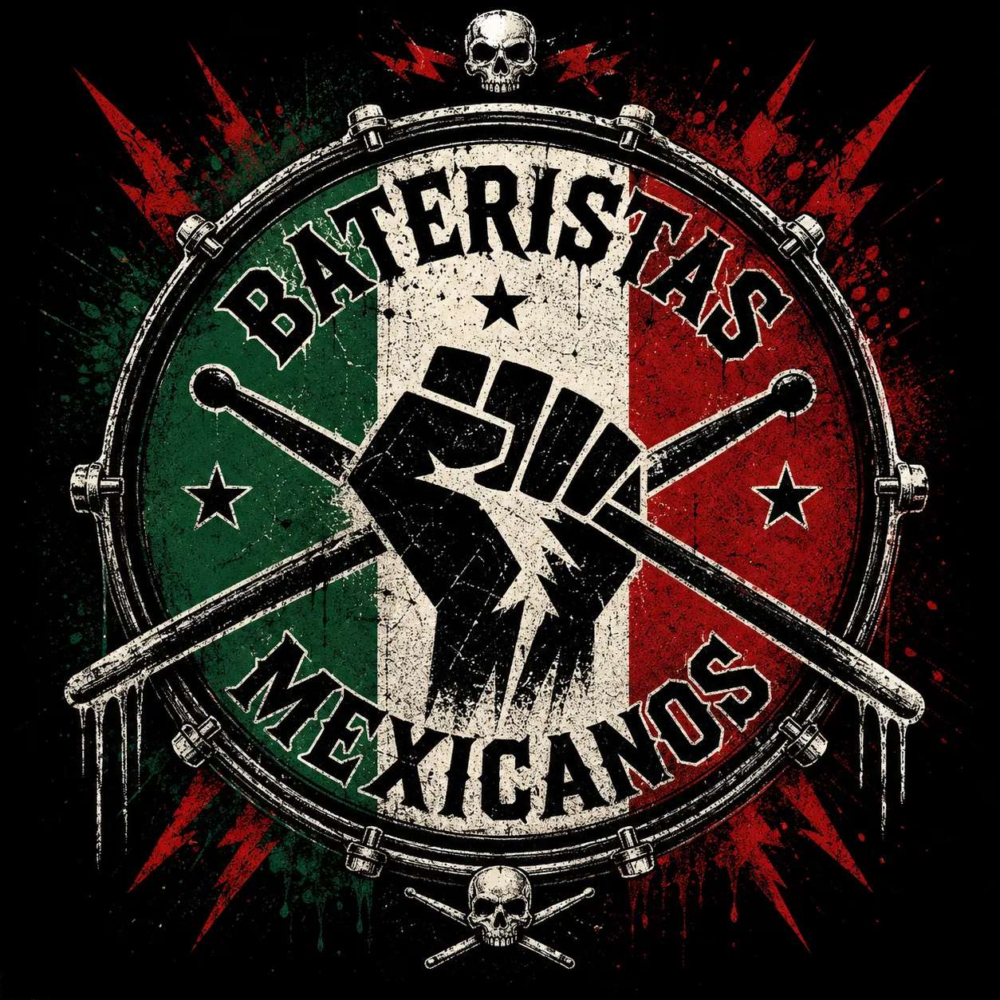

LOS LATIDOS DE MÉXICO
15 BATERISTAS QUE MARCARON EL RITMO

Del jazz al rock, del metal al pop y de los escenarios internacionales a los festivales nacionales, estos músicos han demostrado que México posee una tradición baterÃstica de primer nivel. En toda banda hay un instrumento que rara vez ocupa el centro del escenario, pero que sostiene el corazón de cada canción.
La baterÃa es el motor que impulsa el ritmo, la energÃa y la personalidad de una composición. En México, varios músicos han llevado ese papel mucho más allá, convirtiéndose en referentes nacionales e internacionales gracias a su técnica, creatividad e influencia. Esta selección reúne a algunos de los bateristas mexicanos más importantes de distintas generaciones y estilos. No pretende ser un ranking definitivo, sino un reconocimiento a quienes han contribuido a escribir la historia de la música desde detrás del kit.
🥠LOS 15
| BATERISTA | BANDA / ROL | GÉNERO |
|---|---|---|
| Tino Contreras | Solista / Pionero | Jazz |
| Antonio Sánchez | Pat Metheny Group | Jazz |
| Pacho | Maldita Vecindad | Ska / Rock |
| Fernando Toussaint | Aguamala | Jazz / Rock |
| Patricio Iglesias | El Gran Silencio | Rock urbano |
| Alfonso André | Caifanes / Jaguares | Rock |
| Christian Charpenel | Sesión | Rock / Metal |
| Liliana RodrÃguez | Solista / Sesión | Rock |
| Javier Partida | Colaboraciones | Multiestilo |
| Paulina Villarreal | The Warning | Rock / Metal |
| Elohim Corona | Moderatto | Pop / Funk |
| Jorge Chávez | Escena nacional | Rock |
| Alicia Zepeda | Solista / Sesión | Rock |
| Alex González | Maná | Rock latino |
| Luca Ortega | Nueva generación | Rock moderno |
🥠TINO CONTRERAS
El pionero del jazz mexicano (1924–2021)Hablar de la baterÃa en México es hablar de Tino Contreras. Considerado uno de los grandes impulsores del jazz nacional, desarrolló un estilo innovador que mezcló elementos latinoamericanos con el bebop y el jazz moderno. Su legado continúa siendo una referencia obligada para músicos de varias generaciones.
ESCÚCHALO SI TE GUSTA: EL JAZZ CLÃSICO CON IDENTIDAD MEXICANA.
🥠ANTONIO SÃNCHEZ
El mexicano que conquistó HollywoodGanador de cinco premios Grammy, Antonio Sánchez es uno de los bateristas más respetados del planeta. Su trabajo junto al guitarrista Pat Metheny lo colocó entre la élite del jazz contemporáneo, mientras que la banda sonora de la pelÃcula Birdman le dio reconocimiento mundial gracias a una interpretación prácticamente improvisada que se convirtió en uno de los elementos más distintivos del filme.
DISCO RECOMENDADO: MIGRATION.
🥠JOSÉ LUIS PAREDES "PACHO"
El pulso de Maldita Vecindad"Pacho" ayudó a definir el sonido del rock mexicano de finales de los años ochenta y noventa. Su baterÃa mezcló ska, rock, punk, sones tradicionales y ritmos urbanos, convirtiéndose en parte esencial de la identidad de Maldita Vecindad. Más allá de la música, también ha desarrollado una importante trayectoria como promotor cultural e investigador.

🥠FERNANDO TOUSSAINT
Elegancia y virtuosismo (1958–2020)Fernando Toussaint fue uno de los músicos más completos que ha dado México. Su carrera abarcó jazz, rock, música académica y proyectos experimentales. Su precisión técnica y sensibilidad musical lo convirtieron en un referente para incontables bateristas. Miembro del trÃo de jazz Aguamala y hermano de los también músicos Eugenio y Cecilia Toussaint, su legado permanece vivo como uno de los grandes maestros de la baterÃa nacional.

🥠PATRICIO IGLESIAS
La fuerza detrás de El Gran SilencioCon un estilo explosivo y versátil, Patricio Iglesias ayudó a construir el caracterÃstico sonido de El Gran Silencio, mezclando rock, reggae, cumbia, hip hop y música norteña. Su capacidad para cambiar de ritmo sin perder potencia es una de sus principales virtudes.

🥠ALFONSO ANDRÉ
El arquitecto rÃtmico de Caifanes y JaguaresPocas baterÃas son tan reconocibles como la de Alfonso André. Su manera de construir grooves sólidos, elegantes y llenos de matices ha sido fundamental en discos clásicos del rock mexicano como El Silencio y El Diablito. Además de su trabajo como baterista, también ha desarrollado una destacada carrera como cantante y compositor.

🥠CHRISTIAN CHARPENEL
Precisión y contundenciaIntegrante de varias agrupaciones de rock y metal, Christian Charpenel ha destacado por su técnica, velocidad y consistencia, convirtiéndose en una referencia para músicos de la escena alternativa mexicana.

🥠LILIANA RODRÃGUEZ
Abriendo camino para nuevas generacionesLiliana RodrÃguez representa el crecimiento del talento femenino dentro de la baterÃa mexicana. Su trabajo demuestra que cada vez existen más espacios para mujeres dentro de un instrumento históricamente dominado por hombres. Su presencia ha inspirado a numerosas jóvenes músicas a tomar las baquetas.

🥠JAVIER PARTIDA
Versatilidad al servicio de la músicaCon una trayectoria que abarca diferentes proyectos y colaboraciones, Javier Partida se caracteriza por adaptarse a múltiples estilos sin perder identidad, demostrando que la técnica también consiste en saber escuchar y acompañar a la banda.

🥠PAULINA VILLARREAL
La nueva generación del rock mexicanoComo integrante de The Warning, Paulina Villarreal se ha convertido en uno de los rostros más importantes del rock latino actual. Su potencia, precisión y capacidad para cantar mientras ejecuta complejos patrones rÃtmicos la han colocado entre las bateristas jóvenes más admiradas del panorama internacional.
En 2024 fue nombrada "Baterista de Rock del Año" por la academia Drumeo y elegida como una de las 100 mujeres más poderosas de México por Forbes. Nacida en San Pedro Garza GarcÃa, Nuevo León, arrancó en 2013 junto a sus hermanas Daniela y Alejandra con covers en YouTube que le valieron el reconocimiento de Kirk Hammett, de Metallica.
DISCO RECOMENDADO: KEEP ME FED (THE WARNING, 2024).
🥠ELOHIM CORONA
Groove, funk y creatividadElohim Corona es considerado uno de los bateristas más versátiles del paÃs. Su trabajo con Moderatto y diversos proyectos como músico de sesión demuestra una enorme facilidad para adaptarse al rock, pop, funk y música latina.

🥠JORGE CHÃVEZ
Experiencia en los escenarios nacionalesReconocido por su participación en distintas agrupaciones y colaboraciones, Jorge Chávez ha construido una sólida reputación gracias a su profesionalismo y consistencia detrás de la baterÃa.

🥠ALICIA ZEPEDA
Talento femenino en crecimientoAlicia Zepeda forma parte de una generación que continúa ampliando la presencia de mujeres bateristas dentro de la escena mexicana, aportando una propuesta fresca y técnicamente sólida.

🥠ALEX GONZÃLEZ
El sonido internacional de ManáDurante más de tres décadas, Alex González ha sido uno de los bateristas latinoamericanos más conocidos del mundo. Su estilo mezcla rock, pop y ritmos latinos con una ejecución limpia y poderosa, convirtiéndose en pieza fundamental del éxito internacional de Maná. Su influencia alcanza a miles de músicos que comenzaron a tocar inspirados por sus interpretaciones.

🥠LUCA ORTEGA
Una promesa del futuroRepresentante de la nueva generación, Luca Ortega demuestra que el talento mexicano sigue evolucionando. Su trabajo refleja la influencia de bateristas modernos sin perder una personalidad propia que promete seguir creciendo con los años.

Antonio Sánchez es nieto del legendario actor Ignacio López Tarso y compuso la banda sonora de Birdman casi por completo de forma improvisada.
Paulina Villarreal tocó desde los 9 años: su cover de "Enter Sandman" junto a sus hermanas fue elogiado por Kirk Hammett y las llevó al programa de Ellen DeGeneres.
Fernando Toussaint trabajó como músico de sesión para artistas como Alejandro Sanz, además de liderar el trÃo de jazz Aguamala.
🎧 EL RITMO CONTINÚA
La historia de la baterÃa mexicana no pertenece a un solo género. Desde el jazz de Tino Contreras y Antonio Sánchez hasta el rock de Alfonso André, Alex González o Paulina Villarreal, pasando por la experimentación de Fernando Toussaint y la energÃa de Patricio Iglesias, México ha construido una tradición rÃtmica rica, diversa y reconocida dentro y fuera del paÃs.
Cada uno de estos músicos ha aportado una voz distinta detrás del kit, demostrando que el baterista no solo marca el tiempo: también define el carácter de una canción. Porque mientras los reflectores suelen apuntar al cantante o al guitarrista, son ellos quienes mantienen vivo el corazón de la música.
Del jazz al metal, del ska al pop:
seis décadas de bateristas que definen nuestra música.